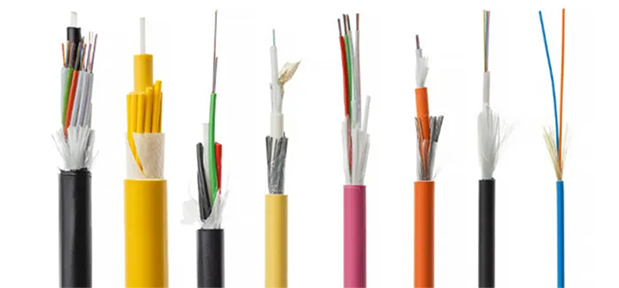

A fibra ótica foi escolhida pela sua alta capacidade de transferência de dados, neste projeto usamos um link principal de 10Gb inicialmente conectado ao rack de distribuição da sala de aula para o rack de distribuição do nosso datacenter, ele possui um DIO (Distribuidor Interno Ótico) e partir dele conectamos o link de distribuição ao SWITCH CORE, neste SWITCH teremos duas redes uma da AAPM e a outra a Rede EDUCACIONAL, o provisionamento dos serviços será projetado para as duas redes.
